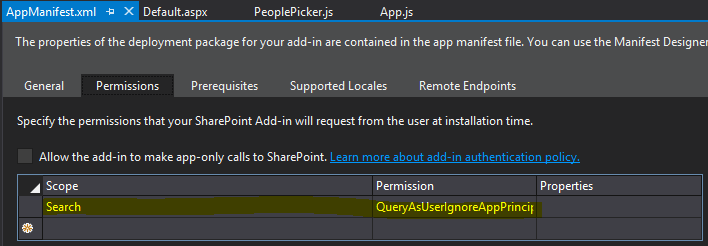

Office UI Fabric People Picker and SharePoint search better together-SP Add-Ins
Introduction
In this article I'll be focused on Office UI Fabric, the official Office and Office 365 front-end framework, in particular I'll talk about the People Picker, an important component to have a user friendly and comfortable functionality for the end user.
On the Office UI Fabric website, there is a sample of this helpful control, however the demo is not so complete because we have static info about the people, I mean there is not a use case where is possible to retrieve the people across a search and display them in the people picker field dynamically.
Building the Sample

So I decided to develop a solution to fill the gap, my intention is, to split this topic in two parts, I'll give you a first solution with SharePoint Add-In and another one with SharePoint Framework in another article.
Let's go forward with the solution, I created a simple SharePoint Hosted App to achieve my goal.
In order to take advantage the SharePoint Search, is necessary specify in the App manifest the right permission:

Description
Regarding the logic, every time that user will write something in the text field, the App will perform a REST API call on the SharePoint Search to grab a result filtered, and the syntax of the url will be something like that:
/_api/search/query?querytext='*" + "Characters to search" + "*'&rowlimit=10&sourceid='b09a7990-05ea-4af9-81ef-edfab16c4e31'
/_api/search/query?querytext='*" + "Characters to search" + "*'&rowlimit=10&sourceid='b09a7990-05ea-4af9-81ef-edfab16c4e31'
As you can see I specified a row limit to not overlook the performance and most important, I have narrowed the field of action to work only with people and user profiles (sourceid='b09a7990-05ea-4af9-81ef-edfab16c4e31').
Naturally the App is ready to go, then you can deploy it directly on your SharePoint Online or On-Premise.
Source Code Files
The solution it's also available on github:
More Information
People Picker and SharePoint search better together - SharePoint Framework
Read this article on my website
https://code.msdn.microsoft.com/Office-UI-Fabric-People-08de40e6/https://youtu.be/_SAOlHZBTR4